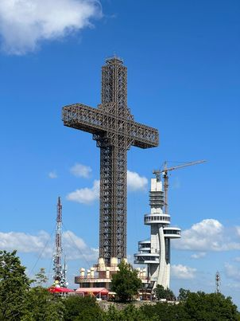
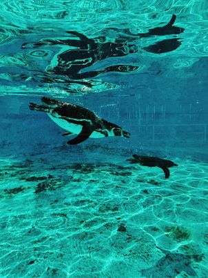
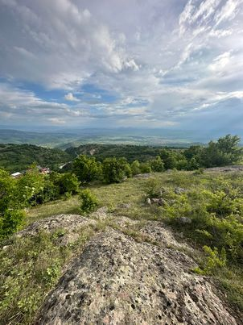
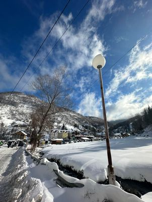

Водно e средновисока планина сместена во јужниот дел на Скопската Котлина. Има поволна географска положба, бидејќи во негова близина се наоѓаат важни патишта, железници и најпрометното место во земјата, градот Скопје. Највисоката точка на Водно е врвот Крстовар, висок 1066 м. каде се наоѓа Милениумски крст. Климата на Водно е пријатна, типично планинска. Водно има разновидна хидрографска мрежа: потоци, подземни води, водопади и извори. На Водно има многу потоци кои овчарите ги користат за напојување на стоката и делумно за наводнување на дивите костени. Од растителниот свет на планината Водно може да се сретнат зимзелени и листопадни растенија. Од листопадните растенија на Водно најзастапен е дивиот костен, но има и бреза, липа, даб, габер и др. Кликни на сликата за повеќе >>
Зоолошката градина Скопје — зоолошка градина во Скопје e формирана во 1926 г. од страна на тричлена комисија со која раководел д-р Станко Караман. Опфаќала 4 хектари површина, а градината располагала со скромен број на животни кои претежно биле добиени како подарок. Со решение на Градското собрание во 1965 година и со донесувањето на елаборатот во 1966 година за ново урбанистичко решение, Зоолошката градина Скопје го добива денешниот изглед. Денес, градината е сместена на површина од 12 ха и располага со 503 животни, од кои: 261 птица од 36 вида, 230 цицачи од 42 вида и 16 влекачи од 8 вида. Основни дејности на градината се: културна, образовна и научна, а нејзина основна цел е да ги чува, одгледува и презентира живите експонати и истите да ги направи достапни за пошироката јавност. Зоолошката градина е отворена секој ден од 9:00 до 18:00 часот. Кликни на сликата за повеќе >>
Лесново — село во Општина Пробиштип, во Злетовско-пробиштипскиот регион, во околината на градот Пробиштип. Името на селото потекнува од зборот „лес“, што значи „шума“. Просторот на којшто се наоѓа селото во минатото бил густо пошумен, па оттаму се претпоставува и дека потекнува името. Лесново е планинско село, сместено од десната страна на Злетовска Река, на надморска височина од 890 м. Селото се наоѓа на југозападната страна од Осоговските Планини и е единствената населба во Македонија којашто лежи во јасно сочуван фосилен вулкански кратер, познат и како „Лесновски Кратер“. Лесново има мошне пријатна клима и се наоѓа на границата на умерено-континентална и планинска, која се одликува со свежи лета и благи зими. Бројот на сончеви часови изнесува околу 2400 часови годишно. Кликни на сликата за повеќе >>
Маврово — село во Општина Маврово и Ростуше, Гостиварско, сместено на брегот на Мавровското Езеро. Селото претставува еден од најпознатите зимски туристички центри во Македонија. Селото Маврово е сместено во рамките на најголемиот национален парк во Македонија — Националниот парк Маврово — на јужниот брег на Мавровското Езеро. Сместено е под падината на планината Бистра на надморска височина од 1240 метри, со што тоа претставува планинско село. Една од поголемите атракции во селото е старата црква „Св. Никола Летен“, која е изградена од рекански мајстори во 1850 година. Црквата е потопена под Мавровското Езеро во 1953 година, но секое лето поради варијабилниот водостој на езерото, црквата е на суво. Кликни на сликата за повеќе >>
